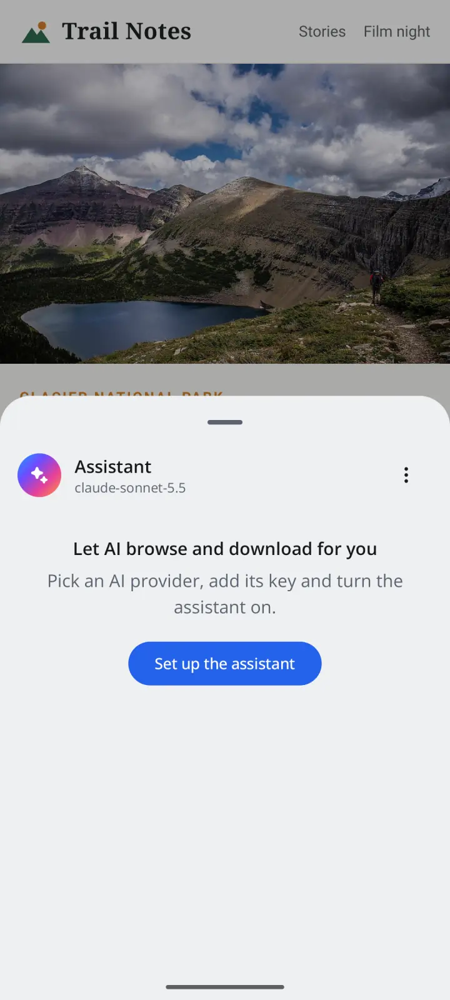
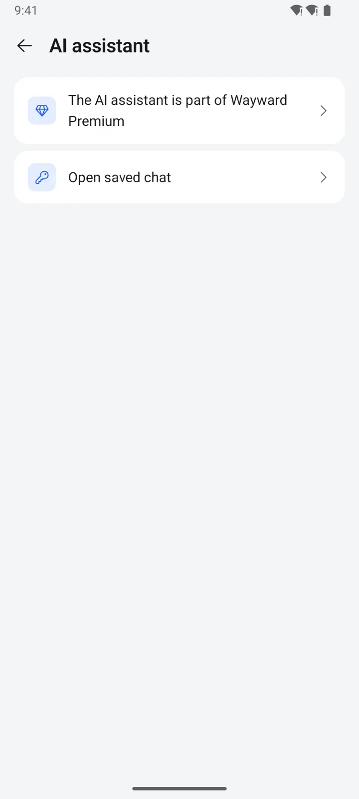
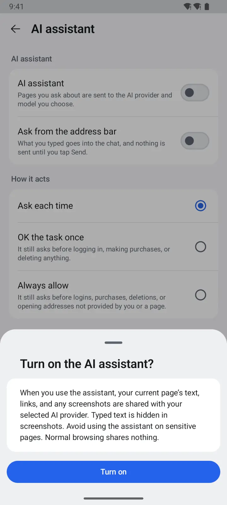
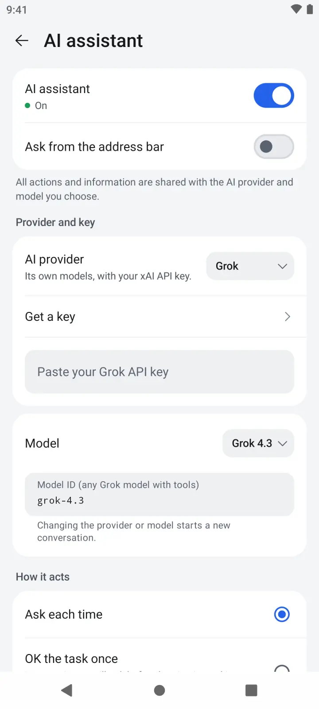
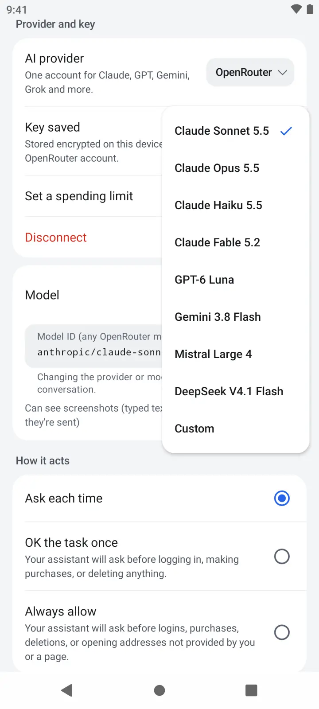

Set up the assistant with your own key
Walkthrough
Use the assistant to ask about a page, summarize it, search the web or compare tabs. It can also browse and save a video for you. It's part of Premium, and it's off until you turn it on. It works with your own account at an AI provider, who bills you for what you use. This walks through setting it up.
1. Get Premium
The assistant is part of Wayward Premium, a one-time purchase. Until you have it, the assistant's panel says Let AI browse and download for you with See Premium, and Settings > AI assistant says The AI assistant is part of Wayward Premium. Tap either to see Premium.


2. Turn it on
Open the ⋮ menu, then Settings > AI assistant. Turn on the AI assistant switch. Wayward explains first (Turn on the AI assistant?): when you use the assistant, the page's text, links and any screenshots go to your AI provider, with typed text hidden in screenshots, and normal browsing shares nothing. Tap Turn on.

3. Pick a provider and add your key
Under AI provider, pick one: "OpenRouter" (one account for models from many makers), "Claude" (Anthropic's own), "OpenAI" or "Grok" (xAI's). You need an account there, with a little credit on it.
Then add the key, in the section named after the provider:
- With OpenRouter, the easiest way is Connect OpenRouter: sign in to OpenRouter in the window that opens (Sign in to OpenRouter), and Wayward gets a key for this phone.
- With any of them: tap Get a key, which opens the provider's key page in a tab. Make a key there and copy it. Come back, paste it in the field under Or paste an API key, and tap Save key.

Once it's saved, the section says Key saved: it's stored encrypted on your phone, and only ever sent to that provider. Set a spending limit opens the provider's page, where you can cap what the key may spend; it's a good idea, since Wayward's counts are only estimates. Disconnect deletes the key from Wayward, after asking.

4. Pick a model
Under Model, pick one of the provider's suggested models, or Custom and type any model ID that supports tools. A line below says whether the model can see screenshots; text-only models read pages but can't look at them. Changing the provider or the model starts a new conversation.

5. Ask something
Open any page and tap the assistant's button in the middle of the bar (TalkBack: AI assistant). The panel opens with three examples to tap, like What's this page about?. Before it reads the page, it shows you what would be shared and asks. See ask about a page.

If you don't see the assistant
If you picked another middle button for the bar (in the welcome or in Settings > Customize), the assistant is hidden everywhere. Settings > AI assistant then starts with The assistant is hidden: tap it to bring the assistant back. Your chat is kept meanwhile.